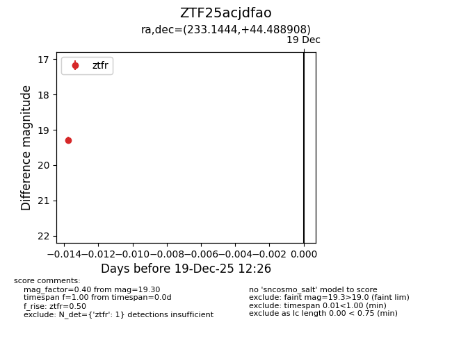
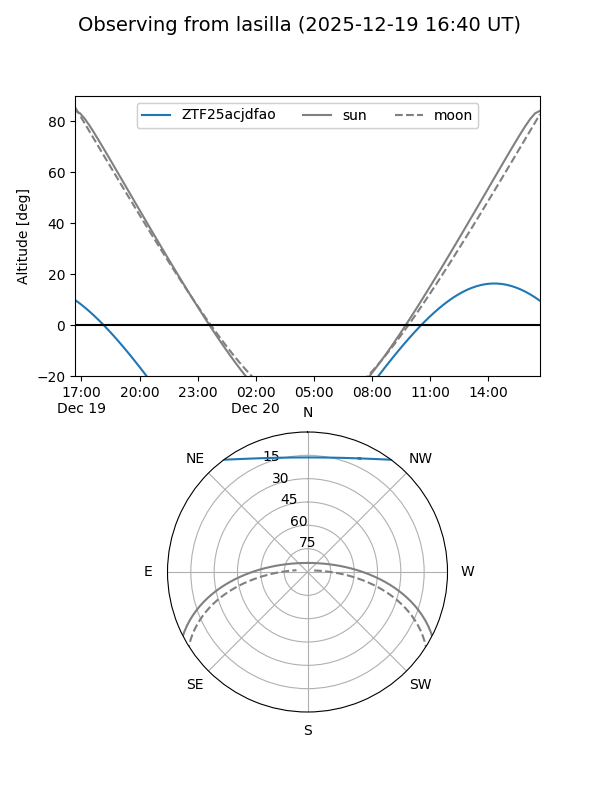
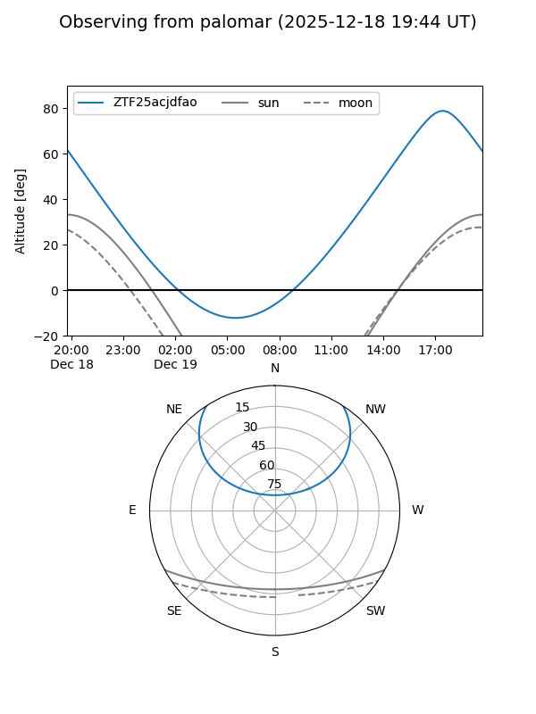

ZTF25acjdfao
Target ZTF25acjdfao at 2025-12-19 12:27
Aliases and brokers:
FINK: fink-portal.org/ZTF25acjdfao
Lasair: lasair-ztf.lsst.ac.uk/objects/ZTF25acjdfao
ALeRCE: alerce.online/object/ZTF25acjdfao
alt names
ZTF25acjdfao (ztf,fink_ztf)
Coordinates:
equatorial (ra, dec) = 233.1444,+44.48891
equatorial (HMS+DMS) = 15:32:34.66,+44:29:20.07
galactic (l, b) = (72.0820,+53.50130)
Flags:
Photometry:
last ztfr=19.30
1 ztfr detections
Lightcurve

Visibility


Additional plots